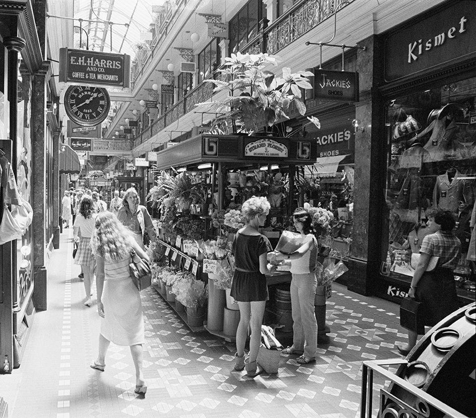

About Us
The company is committed to providing you with the highest quality apparel through an efficient, ethical and sustainable supply chain solution (Total Apparel Management).
Established in 1936, we are a world-reknown specialist in the Global Apparel Industry. As a market leader in Total Apparel Management, we consistently deliver client satisfaction through superior quality and innovation in our apparel offering. We are committed to managing the evolving needs of our specific clients in the ever-changing environments in which they operate.
In order to meet these needs, we are constantly enhancing our range of apparel through ongoing research and development. Proudly Australian owned by the family who started it all, Fashionwave has been at the forefront of Australian fashion for 50 years. In 1968, at the height of Mod, Carnaby Street and Beatlemania, and inspired by the latest looks from London, Fashionwave introduced a modern point of view to Australian fashion. Opening its first store in Sydney’s iconic Strand Arcade, Fashionwave introduced trend driven and ambitious styles in-store each week.
Since then we’ve danced through disco, rocked the power suits of the Eighties, embraced Nineties minimalism and immersed ourselves in Noughties luxury. And now, we continue to celebrate what is new and next. Creativity, innovation and a youthful energy are the Fashionwave way. Focussed firmly on the future of Australian fashion, and with a dedicated and passionate team of designers, Fashionwave combines a wealth of experience with ceaseless creativity.
At Fashionwave we have fun with fashion; all of our designs are original and feature Fashionwave signatures: sharp tailoring, statement prints and luxurious fabrics. Industry awarded and ethically accredited Fashionwave is the largest local manufacturer of fashion in Australia, with all designs originating from our head office in Sydney. Staying local means that we support the Australian fashion industry, and can deliver of-the-minute designs weekly. Fashionwave is an Australian icon, and has been voted the Best Australian Fashion Brand by the readers of marie claire 4 out of the 6 times awarded. Fashionwave has stores throughout Australia and New Zealand.